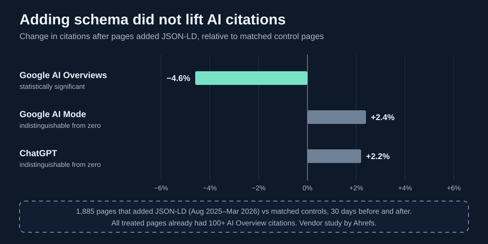

Key takeaways
- Schema markup is not a ranking factor. Google says so directly, and its own penalty for misleading markup removes rich results without touching rankings.
- Its value comes from the search features that read it. Since 2023, Google has retired HowTo, FAQ and several other features. Its gallery now lists 25 features.
- Controlled tests show uplifts, losses and many null results. Markup pays when it changes what searchers see, and when what they see is worth clicking.
- No published study shows that adding schema increases AI citations. The largest one found no meaningful uplift on Google AI Overviews, AI Mode or ChatGPT.
What schema markup does
Schema markup is code that describes a page in the schema.org vocabulary: this page is a product, this is its price, this is the company that sells it. Google says it uses the structured data it finds “to understand the content of the page”, and to gather information about the web and the world in general. [1] It reads JSON-LD, Microdata and RDFa, and recommends JSON-LD where a site’s setup allows it. [1][2]
That gives markup two jobs. The first is description: telling Google what a page is about and which entity it belongs to. The second is eligibility: unlocking a specific search feature, such as a product result with price and rating, a recipe card or a job listing. Most of the value that can be measured sits in the second job, and that job comes with conditions.
Google’s general guidelines spell them out. Structured data “enables a feature to be present, it does not guarantee that it will be present”. [2] Items missing required properties are not eligible. Markup must describe content that readers can see and be “a true representation of the page content”. Even valid markup that passes the Rich Results Test may produce nothing, because Google’s systems can choose another feature or a plain result. [2]
![Diagram of five conditions between schema markup and a click. Step 1, markup on the page in JSON-LD, Microdata or RDFa, drops out if the syntax is invalid or required properties are missing. Step 2, a policy check: the markup must describe visible content and follow Google’s guidelines; misleading markup can bring a manual action that removes eligibility. Step 3, the type must still be a supported feature in Google’s search gallery; retired types such as FAQ and HowTo show nothing. Step 4, Google chooses per query and device, and may show another feature or a plain result. Step 5, the rich result is shown, and searchers click only if the extra detail makes it worth clicking. Rankings are not affected at any step.](schema-rich-result-conditions-mobile.svg)
Figure 1. Valid markup is the first of several conditions, not a guarantee. A manual action for misleading markup removes the rich result and leaves rankings alone. Sources: [1][2][11].
Not a ranking factor
The ranking question has had the same answer for years. In 2019, John Mueller of Google wrote that structured data “generally wouldn’t be seen as a ranking factor”, while adding that a richer result is sometimes enough to make it worthwhile. [3] In April 2025 he was blunter: “Structured data won’t make your site rank better.” It exists to display the search features in Google’s documentation, and without one of them “you’re unlikely to see any visible change from it in Google Search”. [4] A week later he added that if a page lacks enough textual context, no amount of structured data will save it. [4]
Google’s enforcement points the same way. A structured data manual action means a page “loses eligibility for appearance as a rich result; it doesn’t affect how the page ranks in Google web search”. [2] If markup carried ranking weight, abuse would be punished in rankings. Instead, Google takes away the feature.
That leaves one route by which schema can help organic traffic: a richer result that changes how many people click. It is a familiar pattern from the most persistent SEO myths: a real mechanism, inflated into a ranking factor.
The features schema feeds keep shrinking
If schema’s value depends on search features, the list of features sets its value. Since 2023, that list has mostly moved in one direction.
In August 2023, Google limited FAQ rich results to “well-known, authoritative government and health websites” and stopped showing HowTo rich results on mobile. [5] On September 13, 2023, it removed HowTo from desktop as well, which meant “this result type is now deprecated”. [6] In January 2025, breadcrumbs disappeared from mobile results and stayed on desktop only. [7] In June 2025, Google said it would phase out seven types: book actions, course info, claim review, estimated salary, learning video, special announcement and vehicle listing. Its analysis showed they were “not commonly used in Search” and no longer provided “significant additional value for users”. [8] In November 2025, a second round removed practice problems, and Google said Dataset markup is used only by Dataset Search, not Google Search. [7][9] As of May 7, 2026, FAQ rich results stopped appearing in Google Search for every site. [10]
![Timeline of reductions to Google rich results. August 2023: FAQ rich results limited to government and health sites, HowTo removed on mobile. September 2023: HowTo removed on desktop and deprecated. January 2025: breadcrumbs shown on desktop only. June 2025: seven types to be phased out, including course info and estimated salary. November 2025: practice problems removed and Dataset markup limited to Dataset Search. May 2026: FAQ rich results end for all sites. In October 2026, Google’s search gallery lists 25 structured data features, without FAQ or HowTo.](google-rich-result-reductions-timeline-mobile.svg)
Figure 2. Rich result features Google reduced or retired between 2023 and 2026, by announcement or removal date. Sources: [5][6][7][8][9][10][11].
Google’s search gallery, the list of features its structured data documentation supports, now has 25 entries. [11] Most belong to a vertical: recipes, jobs, events, products, vacation rentals, courses, software apps, video. FAQ and HowTo are gone.
Markup has not followed the features. The 2024 Web Almanac saw “limited impact” on adoption after the 2023 FAQ and HowTo changes. FAQPage markup on desktop pages rose from 0.2% in 2022 to 0.6% in 2024. [12] The most common JSON-LD type was WebSite, on 12.73% of mobile pages. Product appeared on 0.77% of pages. [12] Across the October 2024 Common Crawl, the Web Data Commons project found structured data on 51.25% of 2.4 billion HTML pages and on 44.12% of 37.4 million websites. [13] A likely reading is that much of this markup is produced by templates and plugins by default, not written for a specific feature, which is why it outlives the features it once served.
Retired markup does no harm. When FAQ results ended, Mueller said there was no need to change anything. The feature had been used only by “a tiny set of site types”, so for most sites nothing changed in Search. [10] It also does no good in Google Search. As he put it in late 2025, “markup types come and go”. [14]
What the click-through evidence shows
The case for schema rests on clicks. Google’s introduction to structured data cites three examples. Rotten Tomatoes added markup to 100,000 pages and measured a 25% higher click-through rate for enhanced pages than for pages without it. Food Network converted 80% of its pages to enable search features and saw a 35% increase in visits. Nestlé measured an 82% higher click-through rate for pages shown as rich results than for other pages. [1]
These are case studies published by Google without methods. Two of them compare enhanced pages with pages that were not enhanced, and those groups can differ in query type, demand and position, not just markup. Google’s page admits the measurement problem. It suggests before-and-after tests on a few pages and warns that this “can be a little tricky, since page views can vary for a single page for various reasons”. [1]
Better evidence comes from controlled SEO split tests, which apply a change to one group of similar pages and compare it with an untouched control group. SearchPilot, a company that sells this kind of testing, has published several schema tests. The results vary far more than the case studies suggest.
![Chart of nine SearchPilot split test results on schema markup, 2020 to 2025. FAQ schema added across several sites: 67% of tests positive, uplifts of 4% to 15%. Review and price schema removed so FAQ snippets could show: minus 5%. Review and price schema with reviews shown: no detectable change. Review schema only: plus 20%. Article schema in May 2023 and a retest in September 2023: no detectable change in either. Vehicle listing schema: plus 1.7% with a 95% interval from minus 1.3% to plus 4.9%, inconclusive. Missing video fields added: no detectable change. Video section removed from article schema: minus 9.4%.](schema-split-test-results-mobile.svg)
Figure 3. Estimated change in organic traffic in SearchPilot’s published schema tests. Vendor-reported; one site per test, and most pages give no sample size or duration. Sources: [15][16][17][18][19][20].
In 2020, SearchPilot reported that 67% of its FAQ schema tests had been positive, with uplifts between 4% and 15%. [15] Those gains depended on a feature that no longer exists. They also came at a price. According to SearchPilot, Google showed either rating and price snippets or FAQ snippets on a result, rarely both, and removing review and price markup so that FAQs could show cost one site 5% of its organic traffic. [15]
On an ecommerce site in 2021, adding review and price markup, with reviews newly shown on the page, produced no detectable change. A second test with review markup alone produced an estimated 20% uplift. SearchPilot’s explanation was that the prices shown in search results looked uncompetitive because of bundling and minimum order sizes. [16] The rich result helped only when it showed something searchers wanted to click.
Article markup produced no clear effect in two tests in 2023. [17][18] Vehicle listing markup on a vehicle sales site produced an estimated 1.7% increase in 2025, with a 95% interval from −1.3% to 4.9%, shortly before Google announced it would retire the type. [19] In a 2025 test on article pages with embedded videos, adding missing fields to the video markup changed nothing in search results. Removing the video section from the article markup was followed by an estimated 9.4% loss in organic sessions, although the videos never appeared as rich results in either test. [20]
The tests have limits. SearchPilot sells the platform, most pages report no sample size or duration, and each test covers one site. They still support a narrower conclusion than “schema increases traffic”. Markup moves traffic when it changes the result a searcher sees and makes it more attractive than the alternative. When it changes nothing visible, the expected effect is close to zero. The video loss is the exception, and SearchPilot presents its explanation as an observation, not a proven cause. [20]
Where schema still carries weight
Products are the clearest case. Until 2022, Google’s richer shopping results were open only to Merchant Center users. In September 2022, Google expanded eligibility to sites that supply product data through structured data alone. [21] Product markup now feeds two kinds of result: product snippets for pages that describe or review products, and merchant listings for pages where the product can be bought, including shopping results in Google Images and Lens. Google suggests using structured data, a Merchant Center feed, or both. [21][22]
Google’s documentation log shows where its investment continues. In 2026 it added merchant listing support for product categories and sale price dates, new properties for discussion forum and Q&A markup, a review snippet guideline against fake and undisclosed incentivised reviews, and a note that it uses schema.org markup and the og:image tag to pick thumbnails in Search and Discover. [7]
Speaking personally in January 2026, Mueller summed up the position as “yes, no, and it depends”. Some features “thrive with structured data”, with shopping price, shipping and availability as examples. For other types, adding markup in the hope of better rankings is “wishful thinking”. [23]
Description still has some value where no rich result is at stake. Organization markup has no required properties. Google says it can help it understand an organisation’s administrative details, disambiguate it in search results and choose the logo shown in results and knowledge panels, without guaranteeing any feature. [24] It is cheap to implement and hard to measure.
Implementation is where markup usually breaks. Templates generate it, so a template change can remove or corrupt it on thousands of pages at once, and no ranking drop will announce the loss. That is why structured data belongs in the same pre- and post-launch checks as titles, canonicals and status codes during site migrations. Placement can matter too. Google processes only the first 2MB of an HTML file, so markup at the end of a bloated page can be cut off, a limit covered in the crawl budget study. [25]
Schema and AI search
The newest claim is that schema helps content get cited by AI assistants. For Google’s own AI features, Google’s documentation says otherwise. There is “no special schema.org structured data that you need to add” to appear in AI Overviews or AI Mode. [26] Google’s guide to generative AI features, updated in July 2026, lists “overfocusing on structured data” as a myth: structured data is not required for generative AI search, though it remains useful for rich result eligibility. [27]
Microsoft has said something different. At SMX Munich in March 2025, Bing’s Fabrice Canel reportedly said that schema markup helps Microsoft’s LLMs understand content. The statement is known from a LinkedIn post by David Mihm, and Canel did not dispute it. [28] It describes understanding, not citation or ranking.
The largest test of citations is observational. Ahrefs tracked 1,885 pages that added JSON-LD between August 2025 and March 2026 and compared them with matched pages that did not, over 30 days before and after the change. AI Overview citations fell 4.6% relative to the controls, a small but statistically significant drop. AI Mode rose 2.4% and ChatGPT 2.2%, both statistically indistinguishable from zero. [29]

Figure 4. Change in AI citations after pages added JSON-LD, compared with matched control pages over 30 days before and after. Matched difference-in-differences study by Ahrefs, published May 2026. Source: [29].
The study has clear limits. Every page was already heavily cited before the change, schema types were pooled, other edits often happened at the same time, and Ahrefs sells AI visibility tools. Its own conclusion was that it could not “tell whether the schema did a tiny bit of good or nothing at all”. [29] The same article found that cited pages were almost three times more likely to carry JSON-LD than uncited ones. The experiment did not confirm that correlation as cause.
Other evidence is weaker. A Seer Interactive test on a travel site expanded AggregateOffer markup on priority pages and reported a 12% rise in OpenAI bot hits, against a 3% fall on control pages. [30] That measures crawler visits, not citations, and the page reports no sample size or significance test. Mark Williams-Cook placed a fictional address only inside invalid JSON-LD with made-up properties, and ChatGPT and Perplexity still returned it. [31] That shows assistants can read text inside a script block. It does not show that they interpret schema, and he notes that the test cannot prove they ignore it either. The analysis discussed in the SEO vs GEO case study compared pages on the same site and also found that structured data did not explain their citation differences.
No published study shows that adding schema increases AI citations. Structured data may help search systems understand entities at the index level, as Microsoft suggests. That is plausible, and unproven.
How much schema matters, by page type
The evidence supports different answers for different pages. The deciding question is whether Google still has a feature that uses the markup, and whether that feature changes the result in a way searchers value.
| Page type | Google feature in 2026 | What the evidence supports |
|---|---|---|
| Product pages with price and stock | Product snippets and merchant listings, including Images and Lens | Matters. The effect depends on whether price and rating look competitive. |
| Recipes, events, jobs, videos, vacation rentals | Dedicated features in the search gallery | Can matter where the feature appears for the target queries; not tested in the studies reviewed here. |
| Reviews | Review snippets, under stricter 2026 guidelines | Can lift traffic; misleading markup risks losing eligibility. |
| Articles and blog posts | Article markup is supported | Two controlled tests found no detectable change. |
| FAQ and how-to content | None: FAQ since May 2026, HowTo since 2023 | No value in Google Search; harmless to keep. |
| Home page and organisation | Logo and knowledge panel details | Low cost; small effect that is hard to measure. |
| Any page, for AI assistants | None required | No evidence of a citation effect. |
Table 1. A summary of the evidence in this article. Sources: [2][7][10][11][16][17][18][22][24][26][29].
Two risks apply to every row. Markup that does not match the visible page can bring a manual action and the loss of rich result eligibility on the affected pages. [2] And markup that is never checked after launch can disappear without anyone noticing.
Conclusion
Schema markup matters in proportion to the search features that use it. It does not change rankings, and Google’s own penalty for misusing it makes the point: abuse costs the feature, not the position. Where a supported feature exists and changes what searchers see, such as prices, availability, ratings, recipes or events, markup can move traffic in either direction, depending on whether the richer result looks worth clicking. Where the feature has been retired or never existed, the measured effect is close to zero.
AI search does not change that answer yet. Google says no special markup is needed for its AI features, and the best available test found no meaningful uplift in citations. Schema remains a precise, low-risk way to describe a page. It is worth doing well for the page types Google still rewards and worth doing cheaply for the rest. It is not worth selling as a ranking or AI visibility lever.
Sources
[1] Google Search Central. Introduction to Structured Data Markup in Google Search. Last updated December 10, 2025. https://developers.google.com/search/docs/appearance/structured-data/intro-structured-data
[2] Google Search Central. General Structured Data Guidelines. Last updated July 10, 2026. https://developers.google.com/search/docs/appearance/structured-data/sd-policies
[3] Schwartz, B. (2019). Google: Structured Data Not a Ranking Factor but May Be Worthwhile. Search Engine Roundtable, August 28, 2019. Reports John Mueller on Reddit. https://www.seroundtable.com/google-structured-data-not-ranking-factor-28129.html
[4] Schwartz, B. (2025). Google Again Says Structured Data Does Not Make Your Site Rank Better. Search Engine Roundtable, April 15, 2025; updated April 21, 2025. Reports John Mueller on Bluesky. https://www.seroundtable.com/google-structured-data-ranking-39232.html
[5] Schwartz, B. (2023). Google Search to Show FAQ & HowTo Rich Results Less Often. Search Engine Roundtable, August 9, 2023. Quotes Google’s announcement of August 8, 2023. https://www.seroundtable.com/google-faq-howto-rich-results-less-35845.html
[6] Schwartz, B. (2023). Google Drops All How-To Rich Results for Desktop (& Mobile) Search. Search Engine Roundtable, September 15, 2023. Quotes Google’s update of September 13, 2023. https://seroundtable.com/google-drops-how-to-rich-results-desktop-search-36046.html
[7] Google Search Central. Latest Google Search Documentation Updates. Entries from January 2025 to November 18, 2026. https://developers.google.com/search/updates
[8] Schwartz, B. (2025). Google Drops Support for Seven Existing Structured Data Markups. Search Engine Roundtable, June 13, 2025. Quotes Google’s post “Simplifying the search results page”. https://seroundtable.com/google-drops-support-more-structured-data-39583.html
[9] Schwartz, B. (2025). Google Drops Support for More Structured Data Types & Search Features. Search Engine Roundtable, November 6, 2025. https://www.seroundtable.com/google-drops-support-structured-data-types-40386.html
[10] Schwartz, B. (2026). Google Search Drops FAQ Rich Results in Search & Search Console. Search Engine Roundtable, May 11, 2026. Quotes Google’s documentation and John Mueller on Bluesky. https://www.seroundtable.com/google-drops-faq-rich-results-41298.html
[11] Google Search Central. Structured Data Markup That Google Search Supports (Search Gallery). Last updated October 16, 2026. https://developers.google.com/search/docs/appearance/structured-data/search-gallery
[12] Volpini, A. (2024). Structured Data. Web Almanac 2024, HTTP Archive, November 11, 2024. https://almanac.httparchive.org/en/2024/structured-data
[13] Web Data Commons, University of Mannheim. WDC JSON-LD/Microdata/RDFa Data Corpus 2024 Published. January 13, 2025. Based on the October 2024 Common Crawl. https://www.uni-mannheim.de/dws/news/wdc-json-ld-microdata-rdfa-data-corpus-2024-published
[14] Montti, R. (2025). Google Is Not Diminishing the Use of Structured Data in 2026. Search Engine Journal, November 11, 2025. Reports John Mueller on Reddit. https://www.searchenginejournal.com/google-is-not-diminishing-the-use-of-structured-data-in-2026/560516/
[15] Potter, E. (2020). SEO Test: FAQ Schema Impact on SEO Performance. SearchPilot, July 28, 2020. Vendor case study. https://www.searchpilot.com/resources/case-studies/seo-split-test-lessons-adding-faq-schema
[16] Potter, E. (2021). Impact on SEO Performance of Price and Review Schema. SearchPilot, February 10, 2021. Vendor case study. https://www.searchpilot.com/resources/case-studies/seo-split-test-lessons-adding-price-review-schema-product-pages
[17] Abidi, R. (2023). Will Adding Article Schema to Article Pages Impact Organic Traffic? SearchPilot, May 18, 2023. Vendor case study. https://www.searchpilot.com/resources/case-studies/will-adding-article-schema-impact-organic-traffic
[18] Haugen, D. (2023). Does Adding Article Schema to Blog Article Pages Help Improve Organic Traffic? SearchPilot, September 21, 2023. Vendor case study. https://www.searchpilot.com/resources/case-studies/implementing-article-schema-retest
[19] Spinrad, D. (2025). Does Vehicle Listing Schema Improve Search Visibility? SearchPilot, July 11, 2025. Vendor case study. https://www.searchpilot.com/resources/case-studies/does-vehicle-listing-schema-improve-search-visibility
[20] Spinrad, D. (2025). The Video Schema Results That Surprised SEO Experts. SearchPilot, December 5, 2025. Vendor case study. https://www.searchpilot.com/resources/case-studies/the-video-schema-results-that-surprised-seo-experts
[21] Kent, A. (2022). New Search Console Merchant Listings Report: Expanding Eligibility with Product Structured Data. Google Search Central Blog, September 13, 2022. https://developers.google.com/search/blog/2022/09/merchant-listings
[22] Google Search Central. Introduction to Product Structured Data. https://developers.google.com/search/docs/appearance/structured-data/product
[23] Schwartz, B. (2026). John Mueller (Personally) on If Schema Helps With LLMs & Google. Search Engine Roundtable, January 2, 2026. Reports John Mueller on Reddit, stated as his personal view. https://www.seroundtable.com/mueller-schema-helps-llms-google-40693.html
[24] Google Search Central. Organization Structured Data. Last updated September 8, 2026. https://developers.google.com/search/docs/appearance/structured-data/organization
[25] Illyes, G. (2026). Inside Googlebot: Demystifying Crawling, Fetching, and the Bytes We Process. Google Search Central Blog, March 31, 2026; updated October 29, 2026. https://developers.google.com/search/blog/2026/03/crawler-blog-post
[26] Google Search Central. AI Features and Your Website. Last updated December 10, 2025. https://developers.google.com/search/docs/appearance/ai-features
[27] Google Search Central. Optimizing Your Website for Generative AI Features on Google Search. Last updated July 10, 2026. https://developers.google.com/search/docs/fundamentals/ai-optimization-guide
[28] Schwartz, B. (2025). Microsoft Confirms Schema Helps Its LLMs (Copilot) Understand Your Content. Search Engine Roundtable, March 20, 2025. Second-hand report of Fabrice Canel at SMX Munich, via David Mihm’s LinkedIn post. https://www.seroundtable.com/schema-llms-copilot-bing-microsoft-39093.html
[29] Linehan, L. & Guan, X. (2026). We Tracked 1,885 Pages Adding Schema. AI Citations Barely Moved. Ahrefs, May 11, 2026. Vendor study; matched difference-in-differences. https://ahrefs.com/blog/schema-ai-citations/
[30] Seer Interactive. Do AI Models Reward Structured Data? Testing Schema in GEO. Undated case study. Vendor case study; measures bot log hits. https://www.seerinteractive.com/work/case-studies/do-ai-models-reward-structured-data-testing-schema-in-geo
[31] Williams-Cook, M. (2026). Schema, LLMs & the Low Bar for “Evidence” in GEO. Search Engine Journal, June 16, 2026. https://www.searchenginejournal.com/schema-llms-the-low-bar-for-evidence-in-geo/576090/